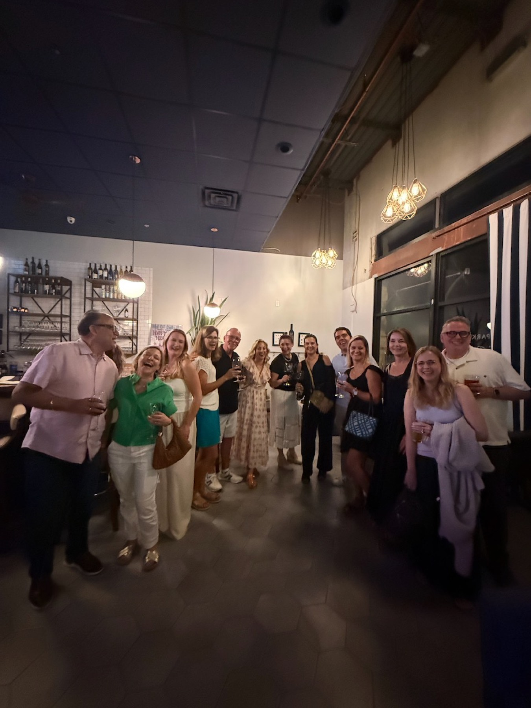
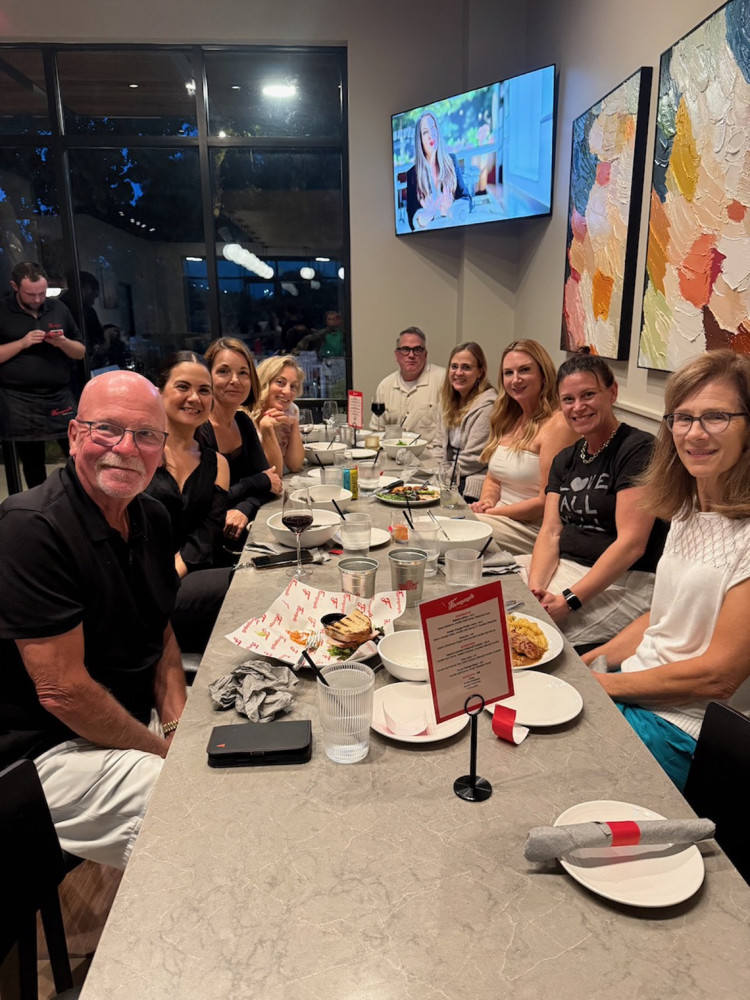
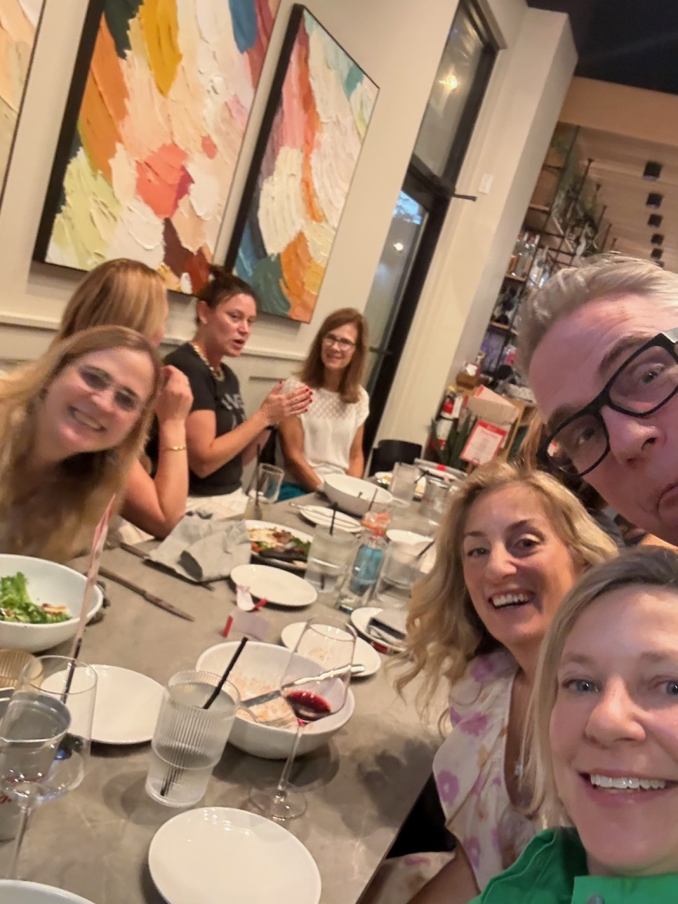
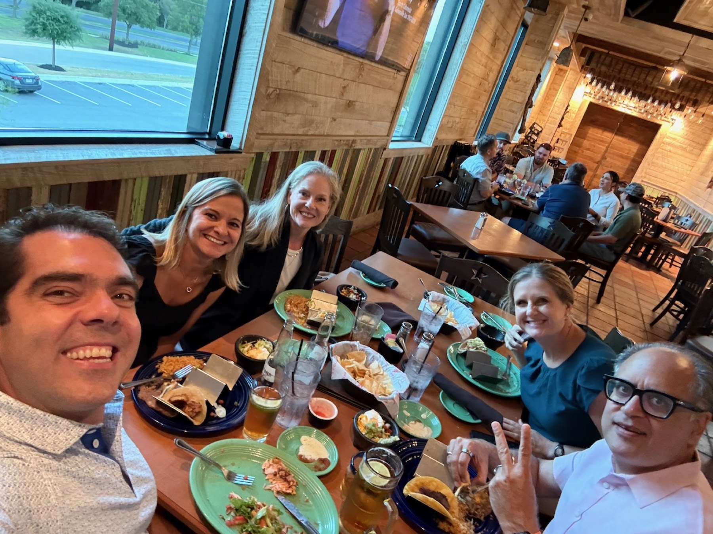

The Porch Project · Steiner Ranch
Interested in meeting some new people in and around Steiner? Come alone or bring a plus one. One night out, tables of six at a local restaurant — then everyone meets up afterward for a Community Nightcap.
Our first Dinner Club just happened. Nobody wanted to leave their table — which is exactly the point. Don't miss the next one.

How it works
No awkward mixers, no name tags. Just a good dinner with five neighbors you haven't met yet.
Pick an upcoming dinner and register on the Dinner Club page. Coming with a friend or partner? Get two tickets and you'll be seated together.
A few quick questions so we can match you with a table you'll actually enjoy. It takes about two minutes.
You (and your plus one) will be seated with five other Steiner residents for dinner at a local restaurant. We handle the matching and the reservation; you just show up.
After dinner, everyone from every table meets up in one spot — so you leave having met a lot more than five people. At our first one I practically had to hurry people away from their tables to get there. Then the fun exploded.



Scenes from the first Dinner Club, September 2026.
The details
Covers your seat and the matching. Food and drinks at the restaurant are on you.
In and around Steiner Ranch. Come solo or bring a plus one — both are very welcome.
Each dinner is at a different local spot. Details come with your ticket once you're matched.
Pull up a chair
All upcoming dinners, dates, and tickets live on our Dinner Club page. Grab your seat before the tables fill up.
See upcoming dinners & registerQuestions? Email hello@porchproject.co. Hope you can join us!
Hear about the next one first
New Dinner Club dates go out to the newsletter before anywhere else.